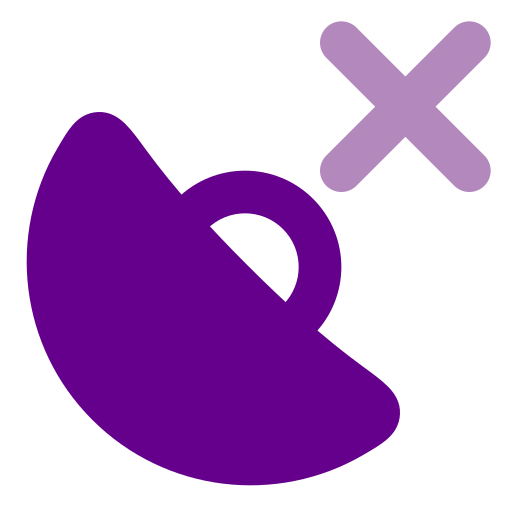
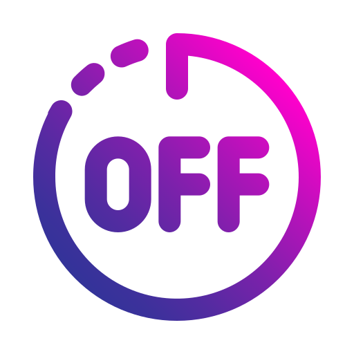
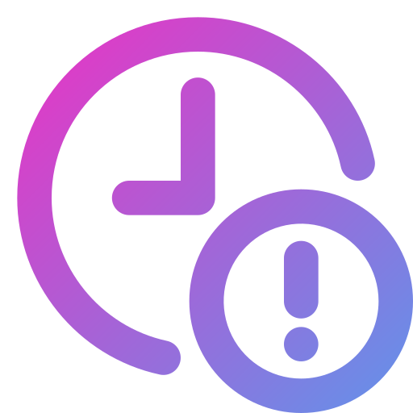

Изменения применяются сразу после сохранения и используются для следующих построений трека.
Выберите критерии для отбора аномалий, которые будут удалены.
Если выбраны оба критерия, будет применено условие ИЛИ.